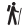

HOME
EXPLORE
LOOKOUTS
TRAILS
Trails
Hard Grade
 Ken Ausburn
Macquarie Pass Lower Trail
Sublime Point Trail
Regular Grade
Minnamurra Rainforest Walk
Mount Keira Ring
Mount Kembla Summit
Sublime to Bulli Trail